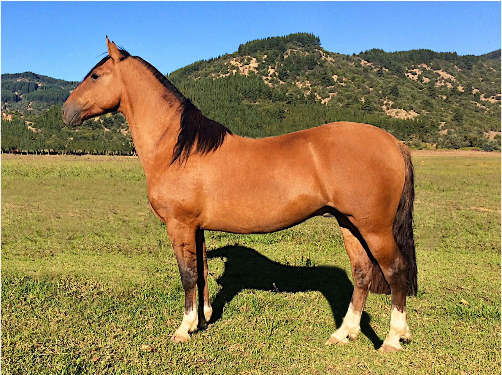
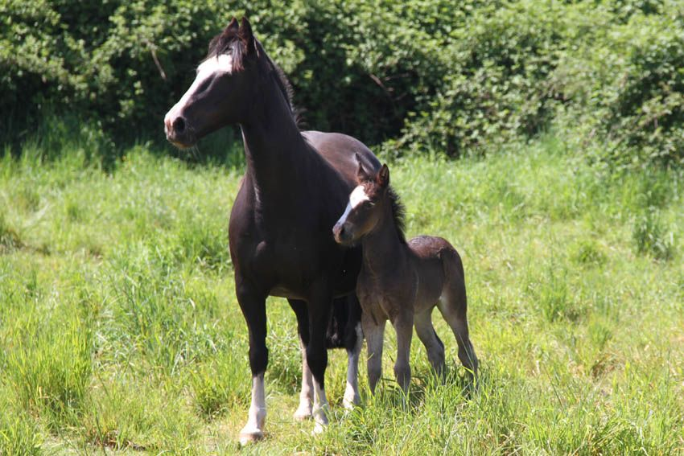
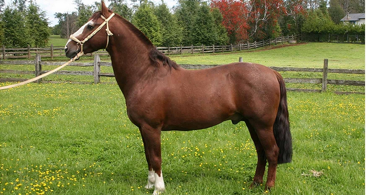

Información General
El caballo chileno, también conocido como corralero, es una raza de caballo presente en todas las zonas rurales de Chile, sobre todo en la zona central y sur del país. Presenta una musculatura especializada para la velocidad y una adaptación para una vida en áreas montañosas. Sus cascos son fuertes y su doble capa de pelo lo hace muy adaptable a climas fríos así como a cálidos y secos.
A diferencia de otras razas Criollas, toda la genealogía del Caballo Chileno se origina en el Virreinato de Nueva Castilla (Perú). La mayoría de los caballos provenían de los valles de Charcas (ahora Bolivia), pero algunos de los potros mas finos escogidos para la remonta del segundo gobernador de Chile, García.
Para obtener más información sobre los Caballos, visita los siguientes sitios:
  